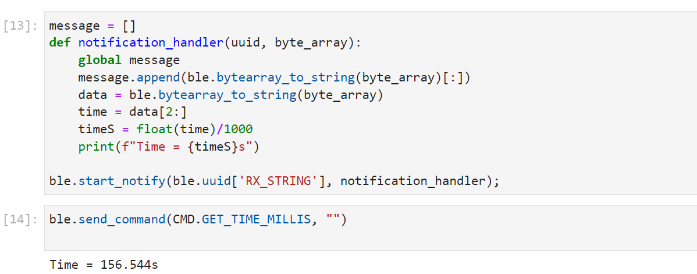
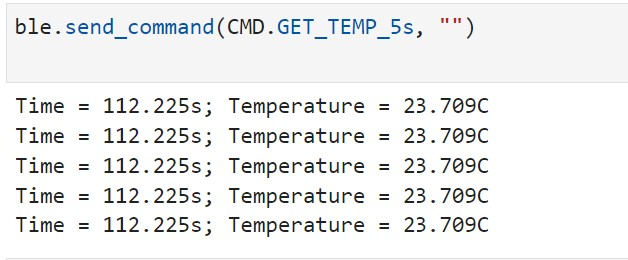
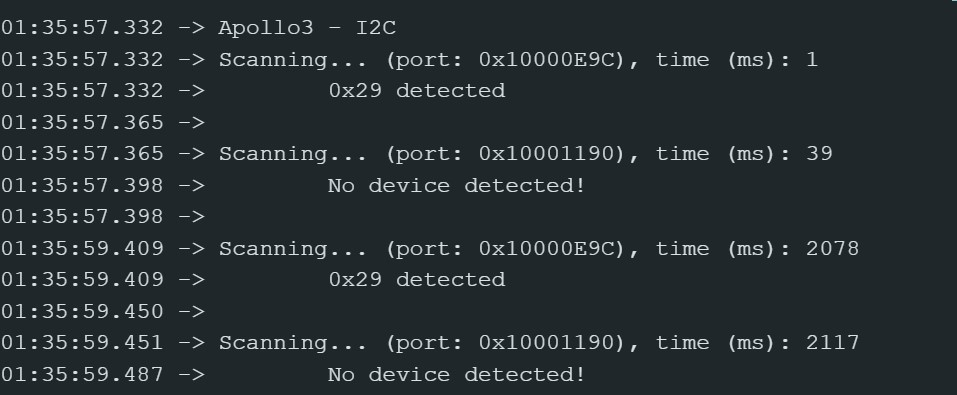
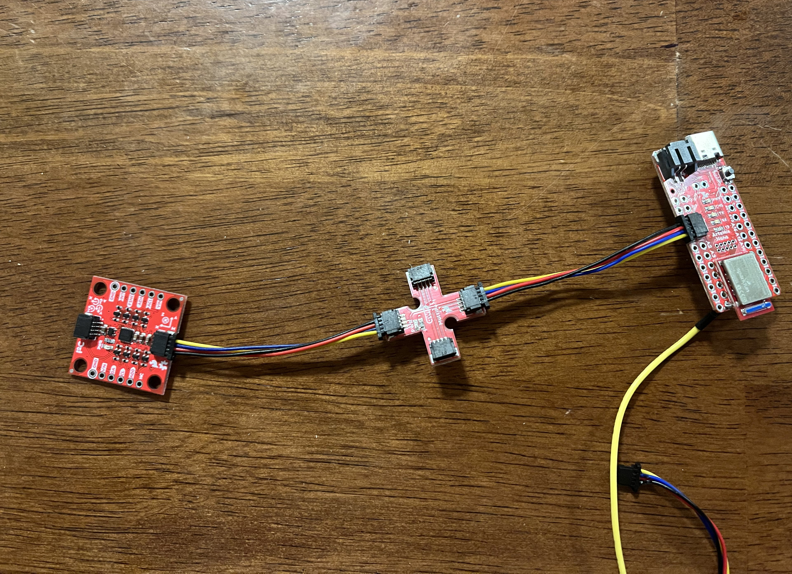
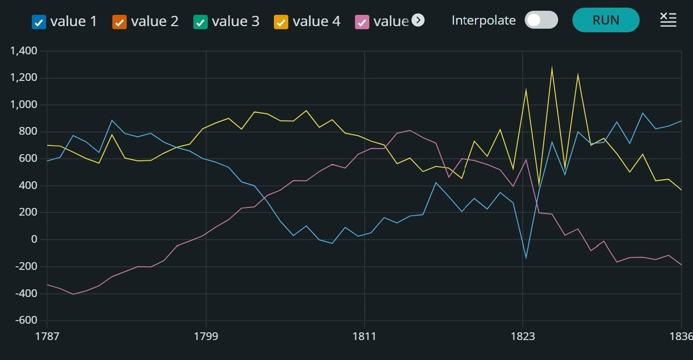
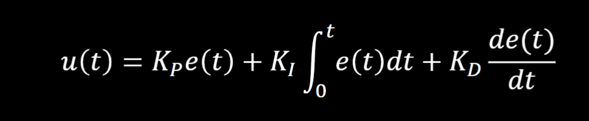
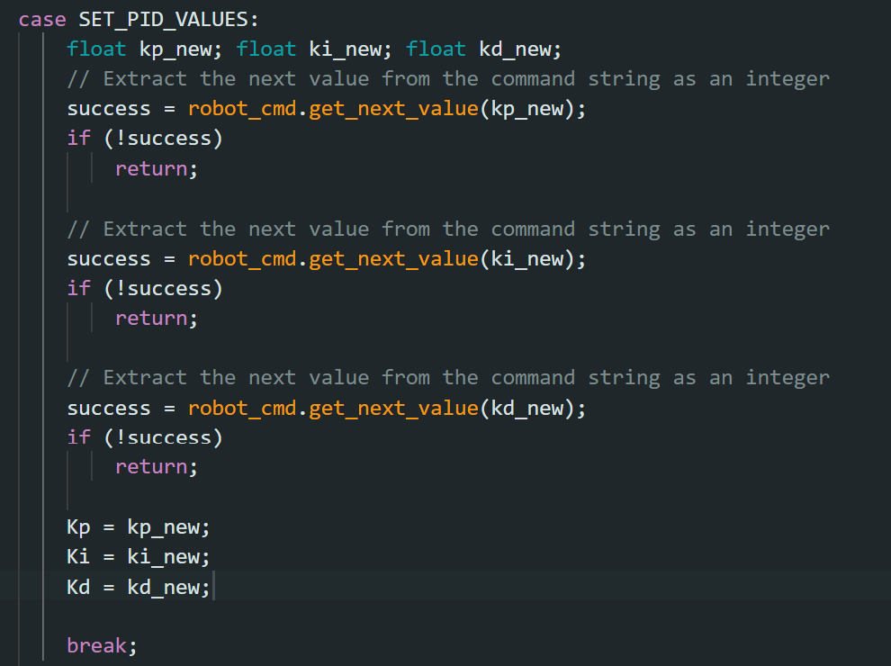
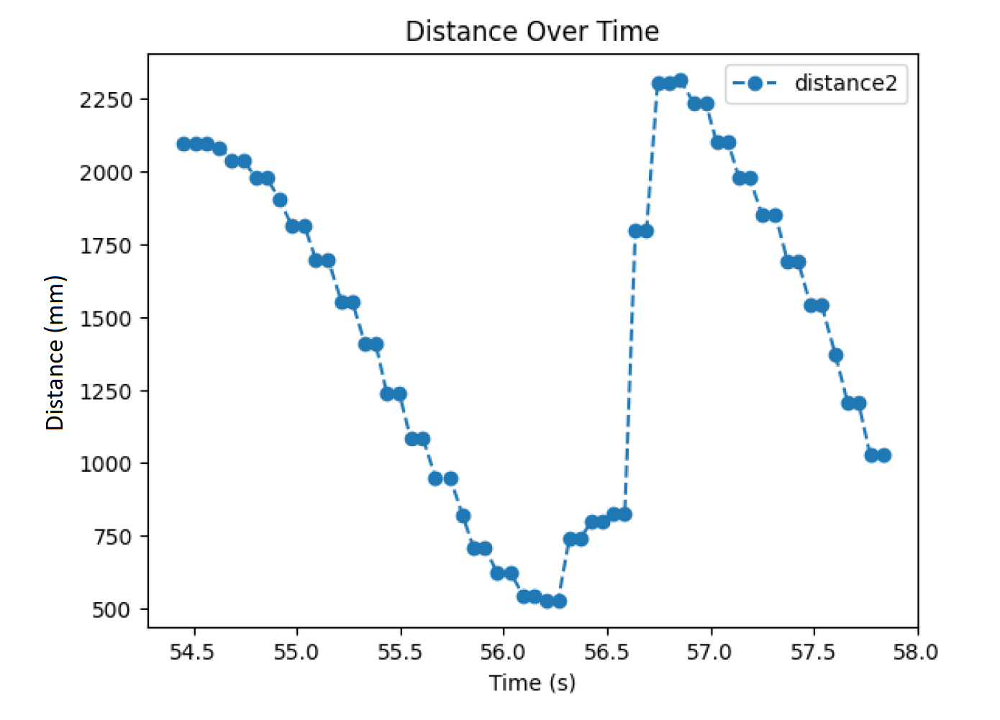
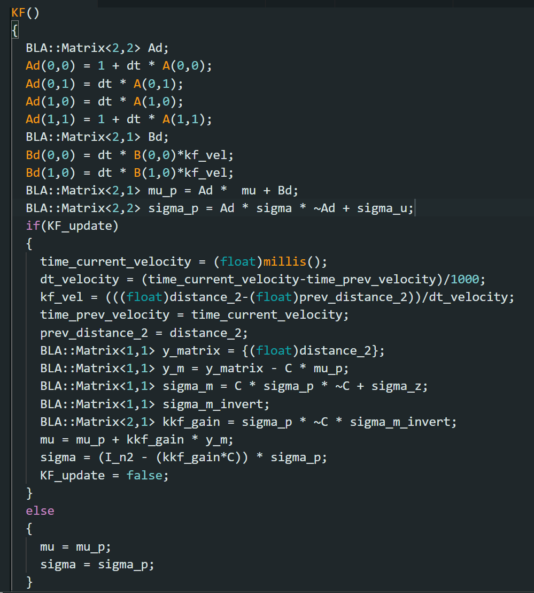

Welcome to my Fast Robots webpage. This page contains all the labs I have completed for this course. I am a mechanical engineering student interested in robotics. I like playing jazz guitar, juggling, and basketball. If you ask me to juggle, I will.
Lab 1: Intro to Artemis
Lab Objective
The goal of this lab was to test the Artemis board with a number of examples to confirm its functionality. This involved testing the LED on the board, the serial output, the temperature sensor, and the microphone.
"Example: Blink it Up"
To test the LED on the Artemis Board, the "Blink it Up" example was used. This code turned the LED on for an specified time, then turned the LED off for a specified time. In the example video below, the LED was on for 2 seconds, then off for 1 second.
"Example2_Serial"
In the second example, the objective was to test the serial monitor output. In this example, the Arduino sent a counting test to the serial monitor. It then allowed the user to type an input into the serial monitor, and the Artemis Board would read this and output the input into the serial monitor. This can be seen in the photo below.
"Example4_analogRead"
The third test involved using the temperature sensor. The temperature was sent to the serial monitor in 10^-3 degrees Celsius. To validicize the sensor, I covered the Atermis board with my hand, and the temperature increased slightly from 32.9 Celsius to 33.1 Celsius.
"Example1_MicrophoneOutput"
This test involed using the microphone to find the loudest frequency. This is shown in the video below.
5000-level: Musical Tuner
This test was done to determine the musical note "A." When the microphone identified an "A," which has a frequency of about 440Hz, the LED would turn on. Otherwise, the LED would remain off. The code here had a range of frequencies +-10 away from 440Hz, as the note can vary slightly. Here, the frequency was found to be 446Hz.
This test was done to develop a musical tuner each note in the key of C major. Specifically, the tuner is able to identify the notes in C major from A4 to G5. The code below shoes the frequencies for each note, as well as a video showing the tuner in action.
Lab 2: Bluetooth Connection
Lab Objective
The objective of this lab was to establish a bluetooth connection between the Artemis board and a computer. This lab involved connecting Python code to the Artemis using Arduino programming. This will then be used to send data via Bluetooth to use in future labs.
Prelab
The bluetooth software used in this course was not compatible with Windows 11. Becuase of this, the setup involved loading Debian using WSL, Windows Subsystem for Linux. This was loaded onto the Windows 11 laptop, and Python using Jupyter Notebook was loaded through the WSL. Using this system, the Artemis board was able to connect to the Python code.
Connecting the Artemis
Once Debian was loaded onto the laptop, the next step was to connect the Artemis Board to the Python code. The first step in this process was to change the MAC address of the Artemis from the default in the code to the one used in the lab. By uploading the given ble_arduino.ino code file to the Artemis, the MAC address reads c0:07:1c:96:23:44, shown in the figure below.
The MAC address was also changed in the Python code in the connection.yaml file shown below. This allows the Python code to read the device via bluetooth and connect to the Artemis. The second step needed to connect the device was to use a unique UUID address. Many of the Artemis boards in the course share the same MAC address, meaning the Python code might connect to different boards. Because of this, a UUID was needed to create a unique connection to the Artmeis board. This was generated in Python and then put in the "ble_service" line in connection.yaml, as well as the "BLE_UUID_TEST_SERVICE" in the Arduino code.
ECHO Command
In order to test the connection between the Artemis board on the computer, multiple commands were made. The first was the ECHO command. This command sent a character string to the Artemis from the Python code, which then sent the phrase back to the Python code. This command was added to the Arduino code in ble_arduino.ide. Here, echo was added to the list of command types:
The code for the ECHO command is shown below:
In Python, the command is sent and received using these lines of code:
"GET_TIME_MILLIS Command"
The next command involved receiving the current time from the Artemis board. This meant using the millis() function in the Arduino package, then converting this value to a double, and sending it as a string to Python. The Arduino code is shown here:
This is sent to Python, with the code shown here:
"Notification Handler"
In order to be able to gather data without manually calling the data, a notification handler was developed to automatically recieve the data in Python. The message array will be useful for future use of the function as we will be able to receive multiple string arrays without calling it manually. This code is shown below:

GET_TEMP_5s Command
This command involved extracting five temperature readings in the span of five seconds. This involved developing a notification handler that would receive a string of time and temperature values at one time step. It would then extract both time and temperature and print them. This is shown in the Python code:
The Arduino code for the command was then written, and would send a string at each time step.
This would then print five temperature values in the span of five seconds:

GET_TEMP_5s_RAPID
This command involved extracting as many temperature readings as possible in the span of five seconds. The Arduino code was similar to the previous command, except it used a while loop until the code either hit 5 seconds, or the maximum amount of data points was extracted. Additionally, the data was stored in an array of strings on the Artemis, and once gathered, the strings were then sent in a for loop to the Python code. This enables to increase the speed of the data taken because you remove the step of sending the data while collecting the data.
This would then print temperature values in the span of five seconds:
Limitations
The Artemis Board has a maximum storage of 384 kB of RAM. If we were to sample 16-bit values at 150 Hz every 5 seconds, we would be able to create 256 values before the storage on the Artemis board would run out. This means that we will need to send data in groups to Python in order to optimize the speed of data acquisition from the Artemis board.
Effective Rate and Overhead
The data rate with 5-byte replies is 32.4 bytes/s, whereas with 120-byte replies, the data rate is 410 bytes/s. Through testing multiple byte replies in intervals of 10, it can be seen that the data rate increases with the amount of bytes sent through the graph below. This trend shows that the larger replies help reduce overhead. However, if the size is too large, the data rate will break the trend and decrease, as seen comparing byte replies with greater than 100 bytes.
Reliability
By removing the delay in the GET_TIME_5s_RAPID, the reliability of the Artemis was measured. Here we can see that the data is reliable, relaying the data without missing data. To confirm this, the time and temperature were printed in the serial monitor and confirmed with the data sent to Juptyer, shown below:
Lab 3: Time-of-Flight Sensor
Lab Objective
The purpose of this lab is to be able to connect sensors to our robot. In this lab, we connected two time of flight sensors in order to find an object’s distance from the robot.
Prelab
For the robot, we are using two identical Time-of-Flight sensors, specifically VL53L1X API. These sensors share an I2C address of 0x52. Because the ToF flight sensors have the same I2C address, we will need to use an I/O pin to connect to one of the ToF sensors and shut it off. After this, we will need to change the I2C address of the one that is currently on. Then we will need to turn the other ToF sensor on. This will allow us to read both sensors as the addresses will be different.
The placement of the two sensors are very important in optimizing the robot's movement. There are 4 possible placements for the ToF sensors that will be considered. One must be in the front, as the car will need to know what it is driving towards. However, the second one can either be placed in the front, one of the sides, or in the back. Placing it in the front will give a more accurate reading of what is in front of the robot because we will be given more readings at one time. However, it will take longer to understand its position, as it will need to rotate to understand its surroundings. Placing it in the back is also a possibility. However, from looking at past years’ robots, it seemed challenging to position the ToF sensor in the back, as much of the hardware was in the way. Because of these reasons, the second ToF sensor will be placed on one of the sides. This will allow the robot to understand its surroundings quicker than with both sensors in the front.
Connecting the Time-of-Flight Sensor to the Artemis
The address displays in the serial monitor as 0x29. Though this is not the 0x52 address shown in the datasheet, the last bit is taken off because it is used as a read/write bit, meaning it is not read in the address. Because of this, the address is either 0x52 or 0x29 because they share the same seven bits except for the one that is not read.

Testing the ToF Sensor
In order to confirm the reliability of the sensor, we need to test its measurement data. This was done by comparing four different measurements. The ToF sensor has three modes, short, medium, and long. The three modes depend on the usage of the robot. The short distance mode has more accuracy. Because of this, a slowly moving robot will benefit because it can react within 1.3m of distance. The long distance mode is beneficial for fast robots. Though there is more sensor noise, the sensor can detect 4m worth of distance, and the fast-moving robot will be able to react in time if it senses something. The medium distance mode is in between both in terms of range and distance. Initially, I believe that the robot should start with the short distance mode. This will minimize the noise of the sensor, and will help initially as we begin to work with the robot. However, through testing the robot in future labs, the 1.3m distance may not be far enough for the robot to react. This will mean that increasing the mode may be necessary.
The short distance mode was tested by taking sensor data at 0.3m, 0.6m, 0.9m, and 1.2m. Ten data points from the sensor were taken at each point and are shown in the graph below. The sensor was very close to the actual measurements, however slightly overshot the actual measurement by 0.01m for each measurement.
Connecting the 2 ToF Sensors
Described in the prelab, the two sensors need to have different I2C addresses in order to be able to gather data from both. To do this, one of the sensors was given 0 power from pin 8, and then the sensor that still was power was changed to have an address of 0x20. The other sensor was then turned on, and both were connected:
For future labs, it is important for the robot to gather data as quickly as possible. To test this, the sensor readings were compared to time, shown in the video below. The time between measurements taken was about 40ms. This is the minimum time between data points, meaning that the limiting factor was the time that the Artemis takes between reading and sending the data.
To test the readings, the distances of both sensors were taken over time, and sent to Jupyter using the notification handler developed in lab 2.
Infrared Measurements
Infrared distance sensors use infrared radiation to detect objects. There are two main types of infrared sensors: active and passive. Active infrared sensors work by emitting infrared radiation, hitting an object and then bouncing back that radiation to the device. This is useful for detecting the range of an object from the device. Passive infrared sensors work by receiving the infrared radiation emitted by objects around the device. This is useful for detecting abnormalities in its proximity. For example, it is beneficial for security purposes to detect a person who shouldn’t be there or any movements in the room. However, this does not determine the distance from an object. An active infrared sensor is better for that, however, it takes longer, as it needs to both send and receive the signal. Because our robot needs to measure distances, the Time-of-Flight sensor is an active infrared sensor.
To test if the Time-of-Flight sensor is sensitive to color and textures, three colors and two textures were tested. White, red, and blue surfaces with similar textures were tested and had the same distance of 250mm from the sensor. This showed that color did not really affect the sensor much. Additionally, smooth plastic and rough cotton was tested, but this also did not affect the sensor, both having about an average distance of 250mm.
Lab 4: IMU
Lab Objective
The purpose of this lab is to be able to use an IMU sensor on our robot and begin to use the RC robot. The lab consisted of setting up and measuring the data from the IMU. Then the ToF and IMU data were gathered together and then implemented on the RC robot.
Setup the IMU
The first step was to connect the Artemis to the IMU. This is shown below, with the IMU connected to a breakout board connecting to the Artemis:

In order to test the IMU, the basic example under the IMU's library manager was used. This code is shown running below. Here, AD0_VAL is the last bit of the I2CC address. By default, it is 1. We will leave it at 1 to maintain the correct address.
When plotting the output with Serial Plotter on Arduino, there seems to be little noise when the IMU is not moving. This is beneficial to us because this can allow us to reset the robot if its sensor readings are unreliable while moving at any point. In the second plot, the IMU was moving, showing that noise increases while the IMU moves.

Accelerometer
The accelerometer on the IMU gathers the acceleration in micro G's. In order to calculate the angle on the x and y axis, roll and pitch respectively, we need to use the inverse tangent. The equations for roll (phi) and pitch (theta) are shown below:
Using these equations, the pitch and roll were found at each time step and plotted using Serial Plot, seen below. When rotating either pitch or roll to 90 degrees, the other becomes very noisy at 90 degrees. For example, the first rotation to -90 degrees was pitch, and once it hit 90, the roll angle became very noisy, when it should have stayed close to 0.
Because of the noise in the sensor, a frequency spectrum analysis was done to determine if a low pass filter was needed to decrease the noise in the sensor reading.
Based on the plots above, it was determined that a low pass filter was not needed, as there was no high amplitude outliers at large frequencies where we will operate the robot. Additionally, from looking at the data sheet, the IMU has a low pass filter as its default, meaning an additional filter was not needed to improve the noise.
Gyroscope
In order to decrease the noise from the accelerometer data, the gyroscope reading needed to be taken. From the graphs below, the gyroscope data drifts as time increases, with the first plot being with a 20s delay, and the second being with a 100s delay. Though the data has little noise, this drifting would cause major errors with the robot, giving it the wrong angles. Because of this, the gyroscope and accelerometer needed to be combined to create an accurate sensor with little noise. Additionally, by comparing the graphs, the longer the delay the larger the amount the gyroscope drifts. This measn that we want to try and minimize the time between data points while running our robot.
The complimentary filter, with the code shown below, was developed to solve this issue. This filter uses a weight function to prevent noise due to the accelerometer and drifting due to the gyroscope. This weight is defined by alpha, and is determined through testing.
The value for alpha was determined to be 0.1, with the plot of the angles shown below. This filter significantly minimized the noise of the measurements, and kept accurate measurements.
Sample Data
By removing all delays and Serial.print statements, and by storing time, accelerometer data, and gyroscope data, the new values are sampled at an average of 3ms. This is very fast, and will unlikely be used as this will give us a large amount data in a small amount of time, which will in turn take up storage on the Artemis and prevent us from understanding what the robot does for a long period of time. The data was stored in 7 string arrays, and then sent to Jupyter one timestep at a time. This is shown below:
To test both the Time-of-Flight and IMU sensors together, both were connected to the Artemis using the breakout board. The data was then collected in separate string arrays, and then sent to Jupyter one line at a time. This is seen by the output from Jupyter:
Cut the Coord
Given the one 850mAh battery and one 650mAh battery, the decision was to power the Artemis with the 650mAh battery, and power the batteries with the 850mAh battery. This will be done for two reasons. The first is that the motors will require more energy to run than the Artemis. This means that using the 850mAh battery will last the motors longer than the 650mAh battery will. The second reason is that the 850mAh battery will make the robot faster than the 650mAh at its maximum, as it will be able to send more power to the motors. Because of this, the 650mAh battery was converted to fit the Artemis, as seen in the image below:
Record a Stunt
The robot can move in very quick motions and maneuver around objects very easily. While testing the robot, it was notice that the speed was unable to change. In the video below, the robot spun in a circle. However, it was unable to slow down, maintaing its fast pace. In future labs, we will work with PWM in order to be able to slow the robot and control the velocity of its motion.
This motion was measured using the IMU and ToF sensors connected to the Artemis. The data was then sent via Bluetooth to Jupyter after 5s:
Lab 5: Motors and Open Loop Control
Lab Objective
The goal of this lab was to fully implement the robot and to use open loop control on the car. This involved connecting the motors to the Artemis and placing all the sensors on the robot.
Prelab
To connect the two motors from the robot to the Artemis, two dual motor drivers were used, one for each motor. One motor was connected to pins 7 and 9 and the other to pins 11 and 12. These pins were chosen due to their PWM capabilities, as it will be for future labs. The connections are shown below:
The lab kit comes with a 650mAh and an 850mAh battery. This allows the Artemis and motors to be run from separate power sources to avoid transient effects, as the motor’s large changes in current wil turn off the Artemis and cause the code to reset once it turns back on. Because the motors use more power than the Artemis, the motors will be connected to the 850mAh battery, while the 650mAh battery will be connected to the Artemis.
Testing the Dual Motor Driver
To test the dual motor driver connection to the Artemis, a power supply was used in place of the motor, and both the input and output of the driver were read using an oscilloscope:
The power supply was set to the same voltage output as the 850mAh battery, 3.7V, to simulate the voltage readings. Pin 12 was set to a duty cycle of 100, and the reading from the oscilloscope is shown below. Here, the blue curve represents the positive output voltage to the motor and the yellow curve denotes the negative output voltage to the motor. Because the code set one pin to 100 and the other to 0, the yellow curve should be essentially 0, while the other showed voltage values. The blue curve is shown as a square wave, which validates the motor driver, as there should be a constant voltage value at each increment in time.
The dual motor drive was then connected to one of the motors on the robot. The video of the motors powered by the power supply is shown below. In this video, the wheels were programmed to spin in either direction for 3 seconds each. While running, there were issues with the power supply, as the wheels would stop and start quickly due to the maximum current in the power supply being reached. This issue was fixed by using the battery given in the lab kit.
The second dual motor driver was then connected to the other motor, and the functionality was tested using the 850mAh battery. In the video below, the wheels move smoother with the battery than with the power supply:
Once the motors were connected, the robot was put together with all the components used in the previous labs. This is seen below:
Lower Limit Value and Open Loop Control
The motor’s were then tested to understand its range. To do this, the lower limit value of the robot was tested. This was done by changing the PWM value until the wheels were able to start moving from a stationary position. This was done for both sides of the robot, with the left and right wheels having a lower limit value of 89 and 96, respectively:
In order to drive the robot in a straight line, a calibration factor was determined to find the ratio that the PWM value of the left wheels needed to be increased based on the right wheel value. This was initially done by taking an upper limit of 255 and both lower limits, finding the possible PWM values in these ranges, and then finding the ratio between the two. This was then implemented in testing. Setting the right wheels to a value of 115, the left wheels should be at 109. However, during physical testing, the left wheels needed to be at a value of 130 in order to drive the robot straight. The calibration factor was then changed to account for the physical motors, coming to a value of 2.1, meaning to maintain a straight path, increasing the PWM value of the right wheels by 1 means increasing the left wheels by 2.1. The robot moving in a straight line is seen below:
To demonstrate full open loop control capabilities, the robot was programmed to move foward for one second, rotate ,and move forward again for one second. The video of the motion is shown below:
5000 Level Tasks: analogWrite Speed and Lower Limit Value
Running the analogWrite line on the Artemis runs at a frequency of around 414 Hz. This is adequately fast for our robot, as quick changes in direction are easily achievable. Manually configuring the timers may be useful to create a more steady PWM signal, as the quicker the reading the more the robot will be able to maintain the directed PWM signal.
The lowest PWM value while the robot was in motion was tested to be 25 for both motors. This was done by initially running the robot at its lower limit value, and then decreasing the PWM value until the robot stopped moving.
Lab 6: PID Control
Lab Objective
The goal of this lab is to gain a strong understanding of a PID controller. This was done through implementing a PID controller onto the robot.
Prelab
A PID controller allows a robot to maintain speed, position, or orientation predictions over different battery levels and surfaces. This controller takes in the error of the desired value and the current value, and uses a proportional, integral, and derivative controller to change the control input of the robot to the desired value. This is shown in below:

The proportional control multiplies the error of the current by a constant Kp. The integral control multiplies the integral of the error over the total time by a constant Ki. Because our robot is a discrete model, this becomes the sum of the products of the error and changes in time at each time step. Finally the derivative control is the product of the rate of change of the error and a constant Kd. These constants will be tuned during the lab to optimize the controller.
To perform this lab, a strong code base needed to be designed. Because uploading code to the Artemis is time consuming, the Kp, Ki, and Kd values needed to be inputted using bluetooth. This was done using the case “SET_PID_VALUES,” which inputted the Kp, Ki, and Kd values (in this order, and was sent to the Artemis using bluetooth. This is shown below:

To test and complete the task, two additional cases were made: PID_START and ORIENT_CONTROL_START. These inputted either a 1 or 0, and if the input was 1, the main while loop in the Artemis would run with PID control, and if it was 0, the robot would stop moving. After running test cases, the data was then sent to Python using the SEND_DATA case. For this lab, the data was taken as follows: time, the front time of flight sensor, the angle of the robot, the right and left wheel PWM values, and the error at each time step.
Implementing the PID controller
To lighten the load for future labs, Task B, orientation control, was chosen. This task involved driving the robot towards a wall and making a 180 degree turn upon getting within one meter of the wall. In order to be able to turn exactly 180 degrees, a PID controller was implemented onto the robot. Shown in the figure below, the controller finds the current error, the difference between the desired angle and the current angle, and solves for an input u to the speed based on a PID controller.
P Controller
In order to optimize the controller, the Kp, Ki, and Kd values needed to be tuned. This was done by testing the robot spinning 180 degrees from a stationary position. This was done by creating a P controller, then a PI controller, and finally a PID controller. The first constant that was tuned was the Kp value. Using a P controller, the first test was done at Kp = 2. Shown in the figure below, the robot quickly moves towards the desired angle of 180 but does not cause overshoot. For the P controller, the goal is to minimally overshoot the angle in order for the integral and derived controllers to balance the controller.
Because of this, the Kp value was increased to 4, outputting the plot below. This creates a small overshoot in the angle, however, the robot moves much quicker to the desired angle initially. This overshoot will be adjusted by tuning the Ki and Kd values to optimize the controller.
PI Controller and Wind Up (5000 level task)
Once the Kp value was determined, the integral controller was added. Because the integral control is the integral of the error over time, the controller has an issue with drifting away. For example, if the error remains positive, the integral will continually increase, and u will become increasingly large, meaning that the P controller will have no effect because the integral is too large. Because of this, the integral controller needs a wind up in order to prevent this drift. A cut off was introduced into the integral controller. In order to map the u output to the PWM values, the map function in Arduino was used. This takes in the u value, the range of possible u values, and the range of possible PWM values, and maps the u value to the PWM value. The range of u value was any number between -200 and 200. Because of this, the integral cut off was determined to be +- 200, meaning any values of the I controller outside of -200 and 200 would be set to +-200. This is shown in the implementation of the PID controller in the Arduino code earlier in the report.
The first test of the integral control was set at Ki = 0.1. This is shown in the plot below. Here, the robot moves slower to the desired angle, meaning the Ki value needed to increase.
Ki was then increased to 0.5, shown below. This creates a very large overshoot and oscillation in the angle measurement, meaning that the integral control has too much influence on the u value.
Because of this, the value of Ki decreased to 0.25. Here, the robot oscillates between the desired angle minimally. The robot does struggle to turn initially, however, this can be fixed with the derivative controller. Additionally, the battery of the motors was charged.
PID Controller
The derivative controller was compared at Kd = 0.4 and Kd = 0.8. Here, both seemed to work, but using the value of Kd = 0.8 showed quicker results towards the desired turn angle. This is shown in the plots below:
Orientation Control Task
With the PID controller determined, task B was able to be completed. This involved driving the robot towards the wall and then turning within a meter from the wall. This is shown in the video below:
The plot of the distance data and the angle of the robot were plotted over time from the video above:

Lab 7: Kalman Filter
Lab Objective
Because the robot moves faster than the time of flight sensor can read data, it is important to be able to predict where the robot is going in order to avoid obstacles. The purpose of this lab was to learn how a Kalman Filter works, and to implement it onto the robot.
Estimate the Drag and Momentum of the robot.
A Kalman Filter works by predicting the position of the robot based on the state space model, and then updating this prediction using the sensor measurement. This function is shown below:
In order to determine the A, B, and C matrices, a state space model was developed for the robot. For our robot, we used the distance to the wall (our position), and the robot's velocity. This is shown in the model below:
This model uses the drag (d) and momentum (m) to find the position and velocity values. The equations for these are: d = 1 / velocity( at steady state speed), and m = -d * time(at 90% of the steady state speed) / ln(0.1). To calculate these values, the robot was driven towards a wall at a distance far enough that the robot could reach steady state speed. Both time and time of flight data was then sent to JupyterLab, and the velocity was calculated at each time step, shown in the figure below:
Using this data, d = 0.390 and m = 0.137. With these values determined, the Kalman Filter could be completed.
Initialising the Kalman Filter
To implement the Kalman Filter, both the A and B matrices needed to be discretized with the functions below:
Currently, to increase the accuracy of the calculation, the Ad and Bd matrices are calculated at each time step, as there are slightly different time steps each time through the data. However, upon discussion with a TA, with the difference in the time steps being very small, as well as the model having errors in itself, this is not necessary, and may be computationally expensive. Because of this, future work will entail initializing the Ad and Bd matrices values.
The remaining matrix initializations come with the initial state of the model. The C matrix is identified to be C = [-1, 0], as the measurement being received is only from the time of flight data. The initial state of the space should be the initial distance measured from the data and a velocity of 0, as the robot is initially stationary. Lastly, the covariance matrices of the state, as well as the covariance of the sensor data need to be initialized. These are seen in the two matrices below. Initially, the time of flight data’s uncertainty is unknown, so the initial guess was about +-20mm in the reading. This meant sigma_3 was initialized at 20. For sigma_1 and sigma_2, the uncertainty of our state, the velocity, because the robot is not moving initially, has a high confidence the speed is 0, meaning that it should be low. This initial guess was 0.1. For sigma_1, the uncertainty should be similar to our sensor measurement, as it is the uncertainty in our position, directly dependent on the sensor reading. For this reason, it was initialized to 20. These parameters were tuned while testing the Kalman Filter in Jupyter.
Implementing and testing the Kalman Filter in Jupyter:
The Kalman Filter was implemented in Jupyter with the function below. Data is stored on the robot whenever the distance sensor is read. Because of this, there are gaps in the readings that may cause the robot to hit the wall before detecting the wall. Because of this, time steps were added in between readings, and only the prediction step was taken.
The initial test for the Kalman Filter is shown in the figure below. This is a good test, as the Kalman Filter closely follows the sensor readings, and only drifts during the prediction steps.
Comparing this to a bad test, let's say the belief in the sensor’s accuracy is low, with an uncertainty of +-100mm. Because of this we initialize sigma_3 to be 100^2, trusting our state model more than the sensor data. This will mean the robot follows the prediction step more than the sensor measurement, and the difference between the Kalman Filter and the sensor data will be quite significantly off, shown in the figure below.
Implementing the Kalman Filter on the Robot
With the parameters of the Kalman Filter completed, the Kalman Filter was then implemented on the robot. This is shown in the code snippets below:

Running this on the robot outputs the data seen in the figure below. This plot confirms that the Kalman Filter runs on the Artemis, however, the Kalman Filter is slower than the sensor output, meaning that there is some error in the way the filter is run. Because of this, more testing will need to be done before the stunt can be run for lab 8.
Lab 8: Stunt!
Lab Objective
So far in this course, we have built a robot, connected it to our computer for quick testing and analysis, created a PID controller and a Kalman filter to the robot to create a better performing robot. This lab takes the previous labs to complete a fast-paced stunt. Because the PID controller developed in lab 6 was for orientation control, this lab will be completed using the orientation control stunt.
Task B: Orientation Control
To complete the task, the robot needed to start within 4 meters of the wall, and turn within 3 feet of the wall. This was similar to the task in lab 6, except this task will be at a much faster speed. This stunt is seen being successfully completed three times in the following videos:
The data for the first video can be seen below. The motor values drastically changed when the error value was high to turn around, validating the PID controller. The maximum speed of the robot before it began to turn around was 3m/s.
Through the completion of this stunt, two changes needed to be made to the robot. The first was that the duct tape on the wheels was replaced. In order to spin about its center as close as possible, the wheels needed to be smooth enough to drift on the floor. Adding the tape in lab 6 allowed the wheels to drift while tuning the PID controller. Replacing the tape took away all the dirt and dust that stuck onto the robot over the course of using it. The second change was that the Kalman filter was replaced with extrapolation. This was done because the Kalman filter was not working properly. From lab 7, the Kalman filter can be seen plotted below:
This does not make sense, as the Kalman Filter is improperly predicting the distances, as it believes it is farther from the wall than it is. Because of this, extrapolation was used to predict the data while the sensor was not taking measurements. This was done by computing the velocity of the robot each time the distance sensor was measured, and then multiplying the velocity by the current time step. This led the robot to be able to properly predict where the robot was moving towards. In this case, the belief in the sensor reading was one. This is shown in the plot below:
With the extrapolation data, the robot was able to begin turning before hitting the wall. In the slow motion videos below, the robot was able to get very close to the wall without touching, leading to some cool videos.
The lab did come with some issues, as sometimes the robot would disconnect, leading to undirected movements, as seen in the blooper below (the robot got very dizzy and needed a break after).
Lab 9: Mapping
Lab Objective
The objective of this lab is to be able to use the robot to map any environment. To test this on the robot, the robot was placed in a given map in the lab, and rotated at four locations, gathering Time-of-Flight sensor data while rotating. With this set of data, a map was created using transformation matrices.
Orientation Control
There were three options to rotate the robot: through open loop control, orientation control, or angular speed control. Because I had done orientation control in previous labs, this was the simplest option. The robot was set to turn in 10 degree increments with a total rotation of 370 degrees, using both time of flight sensors to read distances. This gave a total of 74 readings per point.
Because the robot has four wheels, it can’t perfectly rotate on its axis. However, orientation control was done assuming the robot rotated around a constant axis. Because each square in the lab was a 1x1 ft square, the goal was to be able to rotate without leaving the square. To do this the PID controller was adjusted for rotation while initially stationary, increasing the Kp value to 8. This was because without an initial speed, the PWM value is not large enough to turn the wheels, meaning a large proportional controller increased the PWM value input to the motors. Below is a video of the robot rotating inside a square:
The issue with the IMU is that the gyroscope values tend to drift, as seen in lab 2. Because of this, the robot will overshoot its angle and not rotate correctly. One way to solve this was to continuously reset the current angle to 0 after reaching a desired angle. This would prevent compounding drift over the entire time the data was gathered. The error and PWM values are shown below. When the robot reached its desired angle, the angle was reset to 0, preventing drift to compound over time.
Read out Distances
The robot mapped the environment of the dedicated map in the lab. The map is based on a grid, with each square tile being one grid cell, measuring 1ft x 1ft. The highlighted square in orange is the origin, and the red squares are the locations that the robot gathered sensor information from (in feet): (5,-3), (5,3), (-3,-2), and (0,3).
The data at each point is shown below, with the data in the global frame discussed later in the lab:
Merge and Plot your Readings
In order to map the environment, transformation operations using matrices were done to convert the sensor measurements taken on the robot into a global frame. The first time-of-flight sensor was on the right side of the robot, while the second time-of-flight sensor was on the front of the robot. Given that the coordinate system for the robot is that the x axis points to the front of the robot, the poses of the robot in the robot frame were as follows:
With this, the sensor pose in the robot frame was then converted to the global frame using the transformation matrix below, where theta is the current angle of the robot relative to the global frame’s origin, and the first two rows of the 3rd column is the x and y value of the robot in the global frame.
Using this operation at each point, the data was combined into the map below:
Convert to Line Based Map
With all the data, the walls were then manually guessed. Below is the final map with the walls displayed based on the data. Some data points were not converted to lines because those measurements were taken from far away and were most likely noise. For example, data set 4 was taken at (0,3), therefore the points that were closer to (5,-3) were ignored and the data from (5,-3) was trusted more.